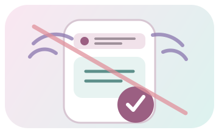

Calendario
Esporta file ICS
Importabile in Google Calendar, Apple Calendar, Outlook e applicazioni compatibili.
Imposta prima la data del prima Giornata.
Calendario attivo
V6.0.3 · app, offline e backup
Installa il sito come app, scarica il piano per l'uso senza rete, esporta i turni e gestisci in modo trasparente i dati salvati nel browser.
PWA · pronta per il turno
Le funzioni essenziali vengono memorizzate automaticamente. Per rendere disponibili offline anche tutte le ricette, i 180 giorni e le liste statiche, scarica la libreria completa.
L'app è già in modalità installata.
Questo browser non supporta l'installazione PWA. Il sito resta comunque utilizzabile normalmente.

Preparazione della libreria offline…
Calendario
Importabile in Google Calendar, Apple Calendar, Outlook e applicazioni compatibili.
Imposta prima la data del prima Giornata.
Calendario attivo
Stampa
Le pagine operative dispongono di stili dedicati per una stampa pulita.
V6 · backup locale
Un backup completo contiene tutte le modifiche personali: calendario effettivo, Diario, ricette e ingredienti personali, impostazioni e spunte della spesa. Il catalogo base V6 non viene duplicato nel file.
1 · Salva
Scarica un unico file JSON TataDiet con checksum di integrità. È il file da conservare e usare per un futuro ripristino.
Include calendario, Diario, dati personali, impostazioni e spunte. Non include copie del catalogo base V6.
2 · Ripristina
Seleziona un file creato da Backup completo. TataDiet lo verifica prima di mostrare il pulsante di ripristino.
Sostituirà i dati personali attuali con quelli contenuti nel backup: calendario, Diario, ricette/ingredienti personali, impostazioni e spunte. Il catalogo base dell'app resta intatto.
Un solo formato: questa pagina accetta esclusivamente backup TataDiet completi. I vecchi JSON di preferenze del browser non sono più supportati.